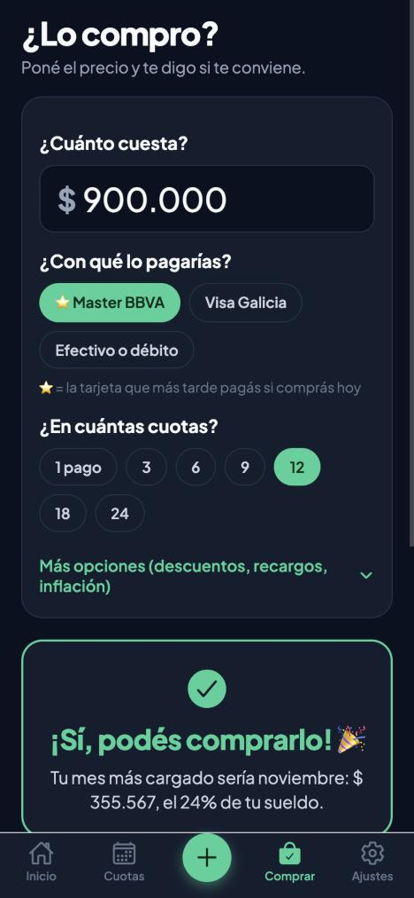
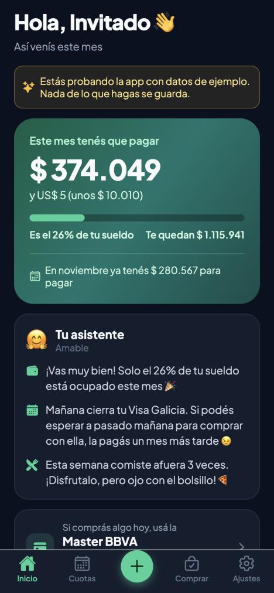

● In development · Mobile app● En desarrollo · App móvil
Gastos — personal financeApp de Gastos
A mobile app that doesn't just log what you spent — it helps you decide before you buy. Built around how money works in Argentina (credit card installments, statement dates and inflation), with language simple enough for anyone to use.
Una app móvil que no solo anota lo que gastaste: te ayuda a decidir antes de comprar. Está pensada para manejar tarjetas, cuotas e inflación en Argentina, con un lenguaje tan simple que la puede usar cualquiera.
- "Should I buy it?" — enter a price and get a clear yes / careful / better not, based on your salary and the months the installments would take up
- Picks the best card to pay with today, from each card's closing and due dates
- Compares paying upfront vs. installments in today's money, with official inflation and exchange rates updated automatically
- Reads credit card statements (PDF) with AI (Claude API) and finds the expenses you forgot to log
- Natural-language input ("sneakers 120k in 6 installments with visa"), nightly reminders and offline support
- ¿Lo compro?: ponés un precio y responde “sí”, “con cuidado” o “mejor no” según tu sueldo y los meses que ocuparían las cuotas
- Te dice con qué tarjeta conviene pagar hoy, según el cierre y el vencimiento de cada una
- Compara contado contra cuotas en plata de hoy, con la inflación del INDEC y el dólar tarjeta actualizados solos
- Lee el resumen de la tarjeta con IA (Claude) y te muestra los gastos que te olvidaste de anotar
- Carga en lenguaje natural (“zapas 120k en 6 cuotas con visa”), recordatorio a la noche y funciona sin internet
React NativeExpoTypeScriptSupabaseClaude APITests

